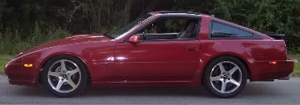

-
After added the Savage's 4 extra clutches to my differential and adjusted, shimmed and torqued according to the instructions on the on the website. I even rebuilt the entire differential, but I am getting the clunking noise from the differential when turning. It binds really bad when turning. Any inputs would be greatly appreciated. -
Re: Question about CLSD differential?
sounds like you need to take it back apart and look at it again, it probably caught something when you put it back together.

1988 300zxt. gt35, stance, etc. Wheels: Varrstoen ES2 18x9.5 et-13 225/40. 18x10.5 et0 245/40
1990 jetta vr6'd -
Re: Question about CLSD differential?
How many clutches did you install?Heehaw wrote: After added the Savage's 4 extra clutches to my differential and adjusted, shimmed and torqued according to the instructions on the on the website. I even rebuilt the entire differential, but I am getting the clunking noise from the differential when turning. It binds really bad when turning. Any inputs would be greatly appreciated.
When I did mine I added 4 clutches on top of the two that were in there and only removed the spacers.
Did you check for breakaway torque? and if so what was it?
The factory came with about 35 lbs as I remember. With 6 clutches mine is 75 lbs.
From a stop if I go straight it is fine, if I turn it makes a terrible sound at first then it is fine. With sticky tires it will not hop as much. When you get on it or at an autoX event it is great.…and how much HP do you have at 0 boost -
Re: Question about CLSD differential?
You are probably not used to driving with a rear end that has that high of breakaway torque. Expect it to hop and bind some under low speed sharp turning.Bolt on, fast, z31. You can only pick two.
Old weaksauce numbers: 391hp/433tq
 -
Re: Question about CLSD differential?
True, I thought mine was binding as well when I went with 6 new clutches in the LSD at first. After a few turns the worst of it went away, it does still chatter/hop/squak around corners at parking lot speeds though.Matt89 wrote: You are probably not used to driving with a rear end that has that high of breakaway torque. Expect it to hop and bind some under low speed sharp turning.
1988 300zxt. gt35, stance, etc. Wheels: Varrstoen ES2 18x9.5 et-13 225/40. 18x10.5 et0 245/40
1990 jetta vr6'd -
Re: Question about CLSD differential?
This is what I would do:
Perform figure 8 break in for 30 minutes, clutch in (coast) through corners:
Post break in, change oil. Use conventional 80/90w with Kendall LSD gear oil additive. This should significantly reduce chatter.
The diff will most likely now need more frequent oil changes, like every 5k miles. It will probably still be loud and chattery. This is how a 'performance' Clutch type limited slip behaves."produce first.talk second." -
Re: Question about CLSD differential?
Now… When you guys say clunking, what do you mean exactly? Cause after I put my clutches in I also get a clunking. However, it is bad! So bad that I thought it was the solid cross member mounts, but they are tight. I still have to figure it out once I get it back on the road. It only does it when I turn to the left, but not the right. Mine sounds like it is coming from the hub area though and not the diff.
Sound similar, or are your situations not as bad?85 Z31 6.0 LSX turbo 766whp/792wtq
04 GTO, LS6, big cam, porting, N20… underway for summertime daily driver. -
Re: Question about CLSD differential?
If it only does it on starting up and turning, it is the clutch pack. If you put in 4 new ones and left the two original ones in so you now have 6, you have about 75 lbs of breakaway torque. Seeing as how the factory only had about half that much, you will get some noise…grind, clunk then it stops until the next slow speed turn at start up. Once you get going it should be fine.SATAN wrote: Now… When you guys say clunking, what do you mean exactly? Cause after I put my clutches in I also get a clunking. However, it is bad! So bad that I thought it was the solid cross member mounts, but they are tight. I still have to figure it out once I get it back on the road. It only does it when I turn to the left, but not the right. Mine sounds like it is coming from the hub area though and not the diff.
Sound similar, or are your situations not as bad?…and how much HP do you have at 0 boost -
Re: Question about CLSD differential?
[quote]Russ84na wrote:Originally posted by SATAN6 clutches total, 2 original ones and 4 extra onesOriginally posted by SATAN
Yes I did check the breakaway torques and it is about 75 lbs wet loaded. -
Re: Question about CLSD differential?
A guy over at Hybridz had the same problem and he said that he set the breakaway torque back to spec, 40lbs or 35lbs. After that was done, he said the chatter in the differential went away, for his daily driving needs. You can search the post over at Hybrid, I can't remember the exact link. -
Re: Question about CLSD differential?
This is the sound of your differential WORKING.
HAVE YOU GUYS TRIED THE KENDALL ADDITIVE? My guess is no. It is pretty much the only thing that I have found that works in hardcore diffs other than the Kazz, Tomei, etc fluids that are made from gold resin and crushed diamonds. You need these additives in order for the clutches to engage smoothly. Once the oil gets hot, it will start to break down. Change oil/kendall after every 6,000 miles or 6 hours of track use.sigpic -
Re: Question about CLSD differential?
87redhead wrote: A guy over at Hybridz had the same problem and pussed out.sigpic -
Re: Question about CLSD differential?
If you are really worried about the extra noise just run two extra clutches instead of 4. Also running the Kendell additive should be required.Bolt on, fast, z31. You can only pick two.
Old weaksauce numbers: 391hp/433tq
-
I will take some video as soon as I can. The clunking on mine is extremely violent. My friend was standing out side trying to pin point where the noise was coming from and jumped back as soon as he heard if for fear of something breaking and flying in his face. That's how loud it is. If it is normal and I just need to add the Kendall additive, that is fine, but if I am breaking shit, that is not good for obvious reasons.
Again though, only does it when I am turning to the left. It will clack (not as violent as clunk, but more violent thank clink) even while turning at about 15 -20 mph. At first I thought my half shafts were coming out of the diff or my Xmember was loose, but all is well when I get under there and look at everything.
Butter, got any more info on that Kendall additive? Where to get it, what it is compatible with. I've got Redline in there now.85 Z31 6.0 LSX turbo 766whp/792wtq
04 GTO, LS6, big cam, porting, N20… underway for summertime daily driver. -
Here's one place.
http://www.autoparts2020.com/rsdev/part … R_ID=28998
I find it at my local 'murican muscle car shop.
I use it with non-synthetic oil. Should work with all clutch type lsd.sigpic

Copyright © 2006–. All rights reserved. Privacy Policy